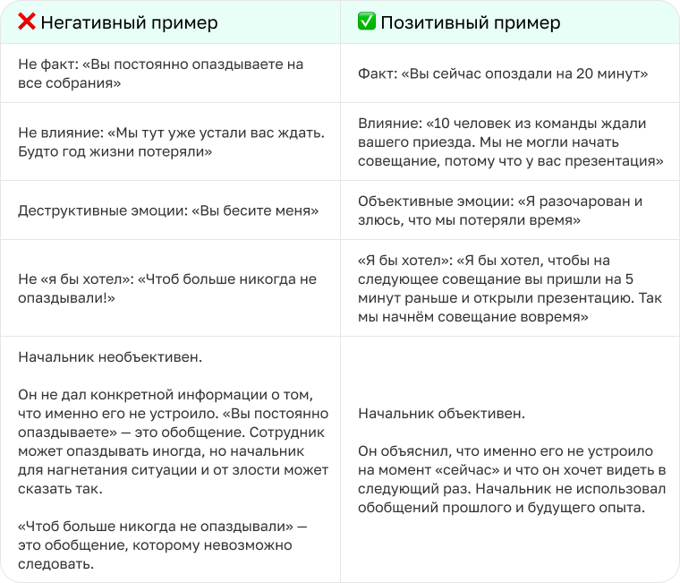

Критика: как реагировать, искать точки роста и не обижаться
Как реагировать на критику?
Мы часто воспринимаем критику болезненно. Так происходит из-за особенностей менталитета и
общепринятых высказываний: «Всё плохо, надо переделать»,
«Что ни день, то у вас ошибка» или «Слушайте, ну такого я ещё в жизни не видел».
В нашей жизни критика будет всегда. Если мы будем остро реагировать на каждое замечание и
ещё неделю перед сном прокручивать, что нужно было ответить, все силы уйдут на борьбу
с негативом и переживаниями.
Критика — это топливо для развития. Но иногда коллеги дают обратную связь
в неудачном формате. Тогда нам становится сложно её воспринимать. Так получается,
что критика мешает выполнять задачи, портит отношения с людьми и делает нас раздражительными и
неуверенными.
Почему критику сложно воспринимать
Для этого есть четыре причины:
Воспринимаем на свой счёт
Критики часто переходят на личности. Вместо того чтобы сказать:
«У вас не получился этот текст», говорят: «Вы плохой автор».
Так укрепляется мысль, что с нами что-то не так.
Есть сильный внутренний критик
Перфекционистам кажется, что у них нет права на ошибку.
Внутренний критик постоянно давит. А если от другого человека приходит отрицательная обратная связь,
то сил отвечать двум негативным голосам не хватает.
Чувствуем угрозу Если руководитель говорит, что статья не удалась,
наш внутренний голос может достроить мысль: «Ага, меня сначала лишат премии,
а потом и уволят». Так мы перестаём чувствовать себя в безопасности.
Нет ресурсов Чем сильнее усталость или истощённость,
тем мы чувствительнее к критике. Нам не хватает сил на борьбу с негативом,
потому что они уходят на то, чтобы закрывать хотя бы базовые потребности организма.
Как отличить деструктивную критику от конструктивной
Фильтруй критику правильно
Мы пропускаем слова другого человека через свои фильтры: опыт, эмоциональное и физическое состояние,
самооценку, убеждения и собственные представления. Если они работают недостаточно хорошо,
нам может казаться, что нас хотят обидеть, расстроить, вылить негатив в нашу сторону и
показать свою власть.
Поэтому важно различать виды критики, чтобы прогонять через свои фильтры и понимать,
как реагировать — пропускать слова мимо, выделять полезную часть или принимать все рекомендации.
Как не переживать из-за критики и извлекать из неё пользу
Хоть нам и тяжело слышать о своих ошибках, важно понимать, что критика помогает двигаться вперёд.
Помните, что критик — это человек со своими переживаниями и страхами.
Ему тоже может быть непросто говорить с нами. Например, он может быть конформистом,
переживать из-за непониманий и негативных последствий, бояться конфликта и отвержения и
быть неуверенным в себе и своих словах.
Поэтому важно:
Не терять веру в себя Помните, что критика к вашей личности не имеет отношения,
только к поступкам. Собеседник пытается изменить не вас, а ваши действия.
Не принимайте негатив близко к сердцу, чтобы сохранить нервные клетки.
Отделять эмоции от рекомендаций Разделите слова критика на две категории:
его эмоции и что он старается донести до вас. Отбросьте эмоциональную часть и выделите суть.
Иногда собеседники используют механизм психологической проекции. То есть говорят не про вас,
а про себя. Например, человек кричит не потому, что вы так сильно не справились с задачей,
а потому, что сам устал и не знает, как выразить свою мысль.
Брать паузу Необходимо дать команду мозгу,
что пора остановиться и поразмышлять, что до вас хотят донести.
Скажите собеседнику прямо, что не готовы продолжать разговор сейчас и вернётесь позже.
Собирать статистику Если за последний год больше пяти человек указывали вам на одну и
ту же ошибку, скорее всего, это повод её проработать. Если меньше пяти человек — скорее всего,
люди использовали механизм психологической проекции. То есть говорили о себе и своих проблемах.
Беречь себя Помните, что у вас всегда есть право поменять работу,
перейти в другой отдел или хотя бы сказать, что вам неприятно слушать обратную связь
в негативном формате.
Искать разумное Поймите, что собеседник — не ваш враг. В его словах, скорее всего,
есть зерно мудрых мыслей, которое нужно выделить. Если нет,
тогда проигнорируйте негативное проявление в вашу сторону.
Определять, как использовать Решите, что будете менять в своём поведении и как.
Постройте в голове потенциальные ситуации, в которых проявите себя по новой.
Понимать, что задевает и почему Если вас сильно задевает то, что говорит собеседник,
стоит углубиться в себя. Постарайтесь разобраться, в чём мотивы вашей острой реакции.
Если чувствуете, что начинаете закапываться и не можете выбраться,
обратитесь за помощью к специалисту. Например, психологу или психоаналитику.
Как формулировать конструктивную обратную связь самому
Прежде чем начать разговор, подготовьтесь. Подумайте, что вы хотите сказать,
почему это важно проговорить сейчас и какие слова больше всего подойдут.
Затем убедитесь, что собеседник готов обсуждать. Открыто скажите о своём намерении поговорить.
Чтобы дать конструктивную обратную связь, используйте формулу: «факт → влияние → “Я бы хотел…”».
Слушайте и задавайте вопросы. Держите в голове цель — «Зачем мы это сейчас обсуждаем? Чтобы что?»
Рассмотрим на примере: сотрудник опоздал на 20 минут на совещание.

Резюмируем
Помните, что критика нужна для развития. Критикуют не личность, а поступки.
Иногда коллеги дают обратную связь в неудачном формате.
Тогда нужно самостоятельно выделить ключевую мысль.
Вы всегда вправе сказать, что вам неприятно слушать мнение человека в негативном ключе.
Берегите ментальное здоровье: своё и другого человека.